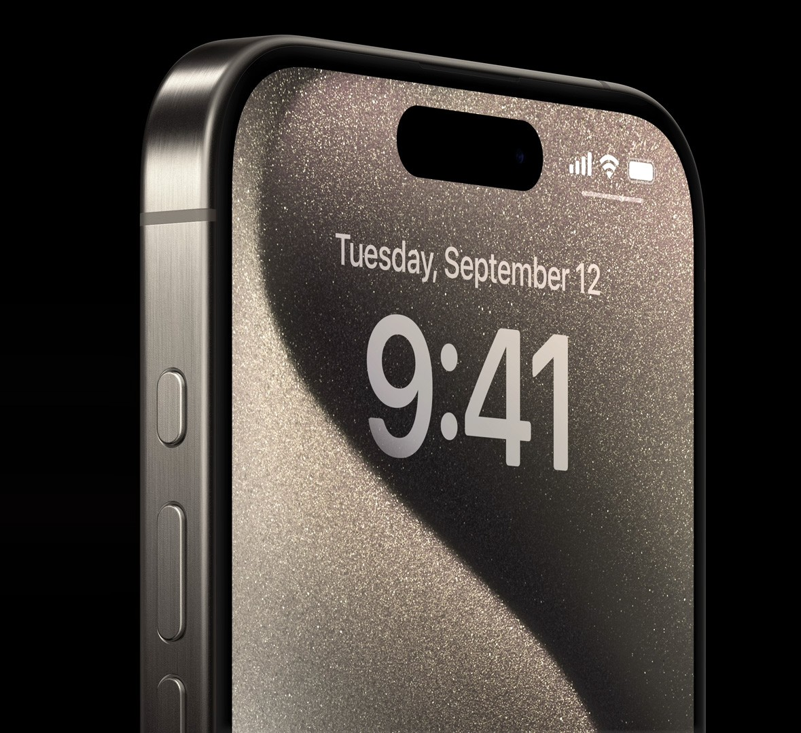

Top 10 Features of the iPhone 15 Pro Max You Should Know
The iPhone 15 Pro Max stands as one of Apple’s most refined and powerful smartphones, combining premium design with cutting-edge performance. Built with a durable and lightweight titanium frame, this device feels solid in hand while remaining comfortable for daily use. The design reflects Apple’s attention to detail, offering both elegance and long-term durability.
One of the most noticeable features is its stunning Super Retina XDR display. The large screen delivers vibrant colors, deep contrast, and smooth scrolling thanks to its high refresh rate. Whether you are watching videos, playing games, or browsing social media, the visual experience feels immersive and fluid. The display is also bright enough for comfortable outdoor use.

Performance is driven by Apple’s advanced chipset, designed to deliver exceptional speed and efficiency. Everyday tasks such as messaging, browsing, and multitasking feel effortless. Even demanding activities like gaming or video editing run smoothly without lag. The improved efficiency also helps in better battery management, allowing users to enjoy longer usage on a single charge.
The camera system is another major highlight. The iPhone 15 Pro Max offers improved image processing, sharper detail, and enhanced low-light photography. Portrait shots appear more natural with accurate skin tones and balanced lighting. The zoom capability allows users to capture distant subjects clearly, making it ideal for travel and event photography. Video recording quality remains one of the strongest aspects of the device, offering stable and professional-looking footage.
Battery performance has also been optimized. With intelligent power management, the device can comfortably last through a full day of regular usage. Fast charging support ensures that users can quickly regain power when needed. This makes it reliable for students, professionals, and content creators who depend on their smartphones throughout the day.
Another important feature is seamless integration with the Apple ecosystem. The iPhone 15 Pro Max works smoothly with MacBooks, iPads, Apple Watch, and other Apple devices. Features like file sharing, device syncing, and cloud connectivity make productivity more efficient for users already within the ecosystem.
Security and privacy remain a strong focus as well. Advanced facial recognition and system-level protection help safeguard user data. Regular software updates ensure that the device remains secure and up to date with the latest features.
Overall, the iPhone 15 Pro Max delivers a balanced combination of premium build quality, powerful performance, impressive camera capabilities, and long-lasting battery life. It is not just a smartphone for communication, but a powerful tool for productivity, entertainment, and creativity. For users seeking a high-end device that performs consistently across all areas, the iPhone 15 Pro Max remains a strong and reliable choice.